Welcome to the o7 team. Before your first ticket, we're going to walk one banking test — send $25 by Zelle — through the entire pipeline, from an Octane test case to a certified verdict on a real iPhone in the Perfecto cloud. Along the way you'll meet every architectural discipline this codebase runs on. None of them are decoration. Each one exists because an auditor, a determinism guarantee, or a 2 a.m. incident demanded it.
Two things before we start. First, o7 is a fork, not a rewrite: its parent pipeline, o1, generates per-test Java from an LLM and executes that; o7 deletes the code-generation stage and executes the committed TestCaseIR directly with a version-pinned interpreter. Both pipelines are live today. Second, everything in this post is drawn from the team's real design record — the o7 spec and decision records ADR 0001 through 0017. Where the design is decided, I'll show you the decision. Where something is still proposed, I'll say so out loud.
The o7 spec is a Stage-2 DRAFT awaiting the owner's sign-off gate, and its two founding decision records — ADR 0016 (the interpreter) and ADR 0017 (keeping the modular monolith) — are at Proposed status, flipping to Accepted at that same gate. ADR 0011 (evidence storage) is Proposed pending a week-0 platform probe. Everything else cited here is Accepted. This post describes the design as specified; nothing in it is invented beyond what those records say, and section 14 is explicitly the place where ideas that are not in the record live.
Amber may depend on teal — never the reverse. Volatile detail plugs into stable policy across a violet boundary. Every rule in this post is a corollary of that one sentence.
01Open the repo — what does it scream?
Clone the pipeline repository and read only the top-level module names. You will see three: conversion, validation-certification, evidence. Inside them, the five recorded stage packages — ingestion, hierarchy-tool, conversion, replay, certification — plus the evidence module's provenance and read model. (Under o7, the replay package's contents changed: ADR 0016 replaced the old static gate and TestNG runner with the IR gate and the interpreter. The stage was replaced; the partitioning wasn't.) Without opening a single class you already know what this system does: it converts test sources, validates and certifies them, and keeps evidence. That is not an accident. It is the result of a fight the design record won on purpose.
The original blueprint proposed five modules named after pipeline stages — a technical partitioning. ADR 0005 rejected that shape because stage-shaped modules are the kind that pull a monolith toward a layered sinkhole, and repartitioned the system along its three characteristic clusters instead, demoting the stage names to packages inside them. The repo's structure now announces the business of the system — certified test conversion — rather than its plumbing.
Contrast the repo you have probably seen elsewhere: controllers/, services/, repositories/, config/, utils/. That repo screams its framework. A stranger can tell you it's a Spring app and nothing else. Ours screams its use cases, and the framework is deliberately kept where you can't hear it.
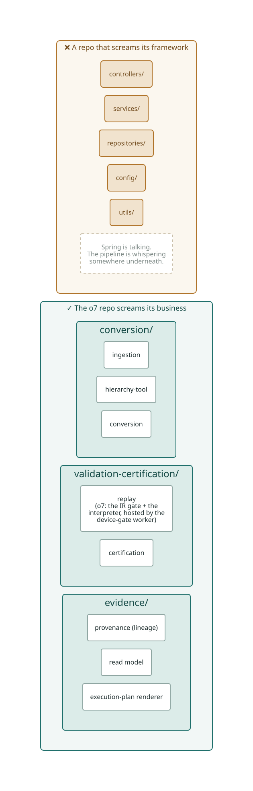
The framework pair — how o7 answers it
Every framework deserves two questions: how do I use it, and how do I protect myself from it? o7's runtime is a Spring Boot modular monolith — that's a real marriage, recorded consciously in the design record, not an accident of a starter template. The protection is nameable: Spring wires the modules together at the composition root, DI selects which implementation sits behind each seam by configuration, and the pipeline's own policy code — the IR gate's checks, the interpreter's step semantics, the classification rules — compiles without caring that Spring exists. The same posture holds for Appium: the interpreter speaks to a Driver seam it owns; only the adapter behind that seam knows the vendor client's names.
New hire, day one "I've read conversion and validation-certification. I can explain how a test case becomes a committed IR and how the IR gets certified. But where's the web layer? Is there even a UI?"
Mentor "You just passed onboarding. There's a small review queue UI and two CLIs — outer-ring details you'll meet in section 12. You learned the whole business without them, which is exactly the point."
02Two halves, one commit
Now the whole system on one page. o7 is built as two halves with a git commit between them. The left half — the authoring arm — is allowed to consult an LLM, in three bounded places, to help turn a messy human-written test case into a precise committed artifact. The right half — the spine — consumes only committed, screened, gated artifacts, and its replay path — gate, interpreter, classification, report — is LLM-free by construction: not one model call anywhere in it. (Exactly one model touch exists past the commit — certification's advisory fidelity grade, and the record is precise about its bounds; sections 06 and 12.) The handoff between the halves is not an API call. It is a commit: a TestCaseIR.json and its locator manifest, signed, hash-chained, and content-addressed.
This is the deepest boundary in the system, and it was drawn exactly where the axis of change lies. The authoring arm changes when sources, models, and capture tooling change — often, and for messy reasons. The spine changes when the bank's certification policy changes — rarely, and for important reasons. Things that change for different reasons at different rates live on opposite sides of a line, and the traffic across the line is plain committed data.
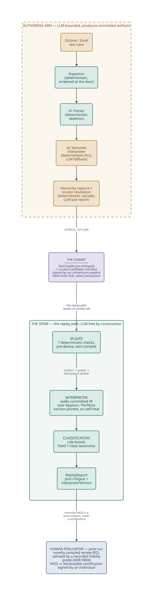
Keep this figure in your head; the rest of the post walks down it. And note the last box: the pipeline ends at a person. The interpreter's machine PASS is a precondition for certification — it is never the certification. That rule has a name in the spec (CF9), it is enforced at the database level (M37), and section 12 is devoted to it.
A call is an instant; a commit is an artifact. Because the handoff is a committed file with a digest, the spine's whole audit story reduces to two values: irDigest — the SHA of what was reviewed — and interpreterVersion — the SHA of what executed it. "What ran?" has a two-value answer. ADR 0017 calls preserving that two-value answer the strategic asset of the design, and declines any structure that would add a third runtime variable to it.
03The heart: which rules are the business?
Strip away every framework and vendor and ask: what would the bank still insist on if this pipeline were run by clerks with paper folders? That question sorts o7's rules into layers, and the sort explains the entire shape of the system.
The paper test
Run it on our rules. A certification verdict must be signed by an accountable, named individual — a paper bank would demand the same signature on a paper form. Evidence must be kept, tamper-evident, reconstructible years later — true of paper audit files long before software. A certified test must mean the same thing every time it is checked — a clerk re-running a checklist expects the same outcome from the same inputs. These are the enterprise-critical rules. They would make or save the bank money — and keep it out of regulatory trouble — with no computer at all. In the code they live as the certification invariants: a named human on every verdict, an unbroken lineage chain, determinism by construction.
One level down sit the rules that only make sense because the pipeline is automated: an IR must pass seven machine checks before a device minute is spent; an exhausted locator cascade hard-fails the run; a novel test shape routes to mandatory human review. No paper process needs these — they exist to govern an automated flow. They are the pipeline's application rules, and they live in the IR gate, the interpreter, and the novelty router.
And at the edge: Octane's REST shapes, Excel workbook quirks, Appium capabilities, Perfecto session tokens, S3 bucket semantics, Spring wiring. Vendors and mechanisms. Important, volatile, and — architecturally — details.
| Rule | Survives on paper? | Home |
|---|---|---|
| A verdict requires a named, accountable individual — a catch-all "system" signer is invalid | Yes — paper certification worked this way for a century | Invariant · CF9 + M37 |
| Evidence is append-only, chained, reconstructible | Yes — the paper audit file | Invariant · lineage |
| Reject an IR whose steps carry no finite timeout | No — only an automated replay needs it | Application rule · IR gate |
| Route never-seen-before test shapes to mandatory review | No — it governs an automated commit flow | Application rule · novelty router |
| Serialize a locator as an Appium capability; open a Perfecto session | Not a business rule at all | Detail · driver adapter |
A data structure is not an object — and o7 exploits the difference
Here is a distinction that will pay your salary for years. An object exposes behavior and hides data. A data structure exposes data and has no behavior. They are opposites, and confusing them is how architectures rot. o7's central design move is built on keeping them apart: TestCaseIR is a pure data structure — eleven steps of plain fields, no methods, no cleverness — and the interpreter is the object that gives it meaning. The data is committed, reviewed, screened, digest-pinned; the behavior is versioned, audited once, and pinned separately. Review the data per test; audit the behavior once as infrastructure. That split is the o7 thesis: the reviewed artifact becomes the executed artifact, because the executable is data.
The day someone adds TestCaseIR.execute() or even TestCaseIR.resolveLocator(), the boundary between reviewed-data and audited-behavior starts to dissolve: behavior begins riding along with the per-test artifact, and "what ran" stops being a two-value answer. The IR stays a dumb record. The interpreter stays the only thing that acts on it. If you feel the urge for a helper, it belongs in the interpreter's module, not on the IR.
04Policy and level — the altitude map
"High level" and "low level" get thrown around loosely. Here they have a precise meaning: a policy's level is its distance from the system's inputs and outputs. The code that touches Excel bytes, Appium sessions, and S3 buckets is the lowest-level policy in o7 — not because it is easy, but because it manages I/O. The certification invariants are the highest — they are the farthest from any I/O and would survive every vendor in the stack being replaced.
The discipline is that source-code dependencies point from low level to high level — every import climbs the altitude map — even though data flows down and back up at runtime. A Zelle workbook's bytes flow from POI up through canonicalization into an IR and back down through the driver adapter to a device; the import graph must not trace that journey. The Excel reader imports the canonicalization contract. The driver adapter imports the seam interface. Nothing in the middle imports either of them.
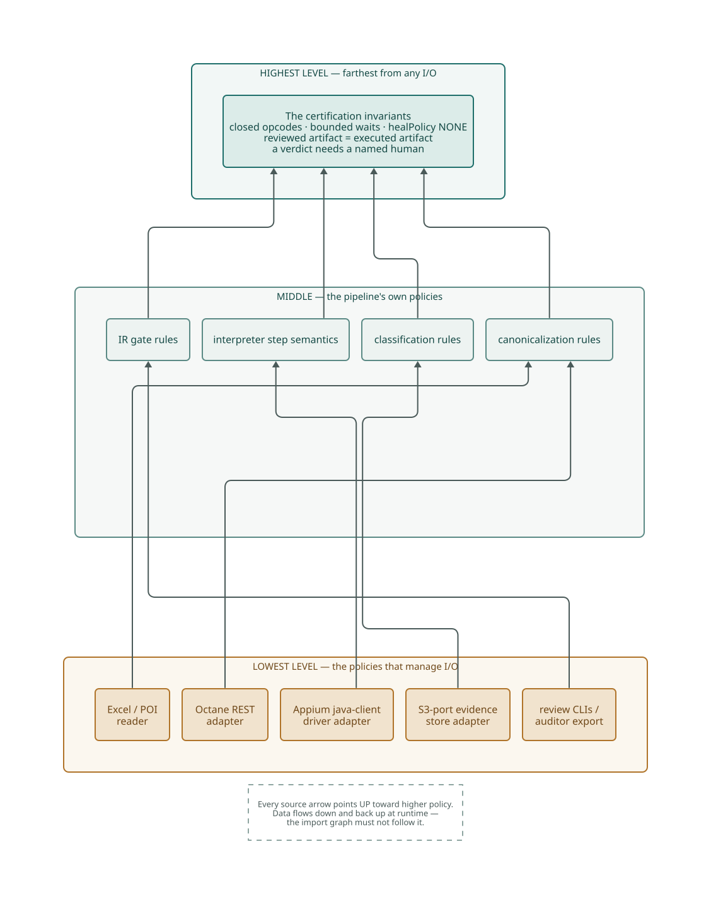
Why altitude matters: change asymmetry
Low-level policy changes often, urgently, and for unimportant reasons. This is not hypothetical in o7 — the design record states it as fact: Perfecto upgrades Appium drivers on its own schedule; the pipeline cannot pin the full device stack even if it wants to. Octane formats drift. Model providers deprecate. High-level policy changes rarely and for reasons that matter: the bank's certification rules change when regulation or risk appetite changes. Arranging every import to point from the churning edge toward the stable center means the churn is contained — a Perfecto driver bump lands as a captured-evidence delta at the edge, not as a recompile of the certification rules.
This is also the protection hierarchy in action: the component that should be most protected from change — the invariants — is the one nothing else can reach with a change. When you review a PR, look at the direction of every new import before you look at anything else. An import from a policy package toward an adapter package is wrong regardless of whether the code works.
05Ingestion — adapters at the door
Our test enters as Octane case ACC-2087: "Send $25 to a saved Zelle recipient and see the confirmation." Five loose English steps — sign in, open Pay & Transfers, open Zelle, send to Alex Rivera, verify the banner. Other tests arrive as Excel workbooks. Two wildly different vendor formats, one pipeline.
The answer is the oldest trick in the trade, done properly: both sources sit behind one adapter contract, and the pipeline cannot tell which one fed it. The Excel adapter (Apache POI) and the Octane adapter (REST) each translate their vendor's mess into the same canonical intake, apply per-adapter canonicalization — including a committed, versioned synonym table ({sign in, log in, login} → login) and noise-strip rules, plain string transforms with zero model calls — and record a source-snapshot digest so an auditor can later prove exactly what was read.
Two disciplines hide in that paragraph. First, substitutability: the two adapters must satisfy the contract identically — if Octane needs special treatment somewhere downstream, the design has failed. The moment you find yourself writing if (source == "octane") anywhere past the adapter, stop: that special case belongs inside the Octane adapter, absorbed at the door. A substitutability violation doesn't stay small — it pollutes every consumer with type-sniffing conditionals. Second, containment: a CI-enforced rule (F2) fails the build if any source-system type crosses out of its adapter. The canonical intake is the only thing that leaves ingestion. Not "should be" — is, because a build breaks otherwise.
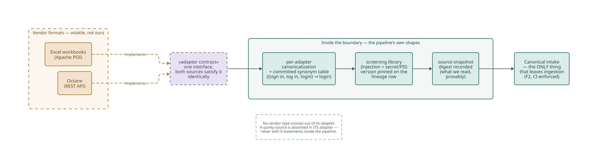
Screening at the trust boundary
Ingestion is also one of the system's three trust boundaries — the places untrusted content enters or leaves. The design record (ADR 0009) defines them by data class: untrusted source text entering, device-produced evidence entering, anything leaving toward a model provider. One shared screening library — injection screening plus secret/PII redaction — runs at all three, no caller may implement its own, and the library's version is itself a pinned field on every screened payload's lineage row. Note the shape of that rule: it is the same "one seam, one enforcement point" move you will see again at the model seam in the next section. Cross-cutting obligations get exactly one implementation, or they drift.
There was a proposal (A0) to put an LLM normalizer at the front of ingestion. The 2026-08-01 gate deferred it for lack of evidence and folded a deterministic synonym-table-plus-noise-strip into the adapters instead — that fold is what you see above. The next day the owner ratified A0 by override, on unchanged evidence, with four follow-on obligations still open; the deterministic fold stays, and A0 would sit upstream of it. I tell you this not as gossip but as a lesson in honest records: the ADR preserves both the gate's ruling and the override, so you can see exactly which decision rests on evidence and which on authority. Read ADR 0015 before you touch ingestion.
Who changes this code? The actor test
Look at what lives in the authoring arm and ask who asks for changes to each piece. The POI adapter changes when a vendor format shifts — the tooling team answers to that. The synonym table changes when QA's phrasing conventions drift — the QA org owns that vocabulary. The screening rules change when the security owner updates the red-team corpus. Three different masters, three different rates of change — so three separate modules, none allowed to know the others' internals. When one file answers to two masters, every change for one risks breaking the promise made to the other. That is the actual content of "single responsibility": one module, one reason to change, where "reason" means a person who can demand it.
06The one model seam
ACC-2087's five business steps must become eleven precise runtime steps. The A1 parser splits structure deterministically; the A2 semantic interpreter expands compound steps into opcodes, resolves screen contexts, and — only when its deterministic templates miss — falls back to a bounded LLM call. Note the flag A1 raised on step 3: recipient-selection-mechanism-unspecified. Does "send to Alex Rivera" mean tap a saved tile, or search by name? A1 doesn't guess; it flags. A2 must resolve that flag — deterministically if a known template matches, by bounded model fallback if not — because, as you'll see in section 08, an unresolved ambiguity flag is a gate failure, not a shrug.
Now the architectural point. The LLM is the most volatile dependency this system has: providers deprecate models on their own schedule, the roadmap itself plans a provider change, and pricing shifts quarterly. The rule for volatile things is: never let policy name them. So every model call in the entire system — A2's fallback, the locator last-resort, the capture proposers, and certification's one advisory fidelity grade (ADR 0004; more in section 12) — routes through one seam: invoke_models, a Spring interface whose implementation is selected by configuration. Behind it live prompt assembly, the screening call at egress, the response cache, and version capture. In front of it, callers know none of that.
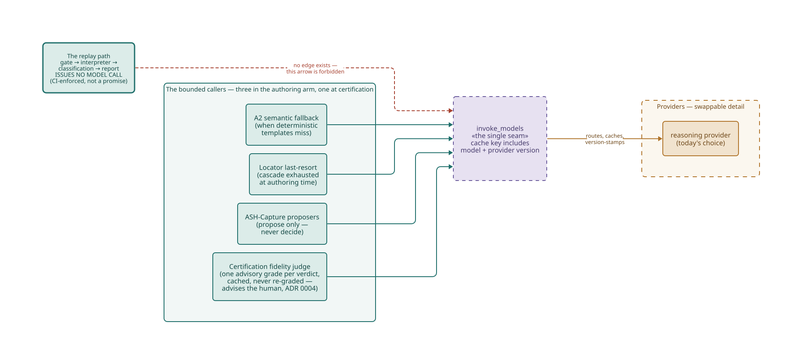
Depend on the seam, cache with the truth
Two supporting decisions make the seam real rather than ceremonial. ADR 0002 puts the model and provider version in the response-cache key — a cached answer from one model version is never silently served as another's, because a cache that lies about provenance would poison every downstream pin. And the swap-provider promise is tested: a golden-set contract-parity run executes against both seam implementations at cutover, and divergence beyond certified thresholds blocks it. "Swapping the provider is a config change" is an acceptance-tested claim, not a slogan.
A boundary is only as strong as its enforcement
Here is the uncomfortable truth the design record states plainly: the stage-3 gate declined to build a runtime plug-in structure at this seam — Spring DI gives the strategy for free — so the entire protection of the model boundary is two build-time rules. F1: no type outside the adapter package references a provider SDK or model construct. F2: no source type leaves its adapter. ArchUnit rules, CI-blocking, run on every commit. The ADR is honest that this protection is contingent: it exists only as long as the team maintains it, and deleting or suppressing those rules requires a superseding decision record, not a code review. A one-interface boundary without reciprocal structure degrades fast when discipline is all that guards it — which is precisely why o7 moved the discipline into CI, where it cannot be quietly forgotten. When a boundary matters, automate its defense.
One more bound — decided for the capture loop in ADR 0014, and mirrored by the deterministic gate-and-commit machinery everywhere else in the arm: the model proposes; determinism disposes. No LLM output ever decides an admission, a commit, or a trust status; committed, versioned code disposes. Hold that line in every feature you build here.
07The commit is the boundary
The authoring arm's output for ACC-2087 is two files: the eleven-step TestCaseIR.json and its LocatorCandidate manifest. Here is the IR's step 7 — the one interesting enough to teach from:
{ "index": 7, "action": "TAP", "timeoutMs": 7000,
"syncAfter": "WAIT_FOR_IDLE", "healPolicy": "NONE",
"target": {
"naturalReference": "the saved recipient Alex Rivera",
"screenContext": "ZelleScreen",
"resolvedLocators": [
{ "strategy": "ACCESSIBILITY_ID", "value": "recipient_AlexRivera",
"confidence": 0.91, "source": "OBJECT_REPO" },
{ "strategy": "XPATH",
"value": "//XCUIElementTypeCell[@name='recipient_AlexRivera']",
"confidence": 0.86, "source": "PAGE_SOURCE" }
] } }
// Plain fields only. Two locator candidates, committed in cascade order.
// timeoutMs, syncAfter, healPolicy: the three runtime fields o7 added.Notice the form of what crosses the boundary: plain data, shaped for the consumer's convenience. No POI cell references, no Octane JSON, no model transcripts, no prompt logs — the spine never sees any of it. Data crosses a boundary in the form most convenient for the inner side, or the boundary is a fiction. The credentials cross as vault: references, never values. And every step carries the three runtime fields the interpreter needs: a finite timeoutMs, an explicit syncAfter, and healPolicy fixed to NONE — hold that last one for section 09.
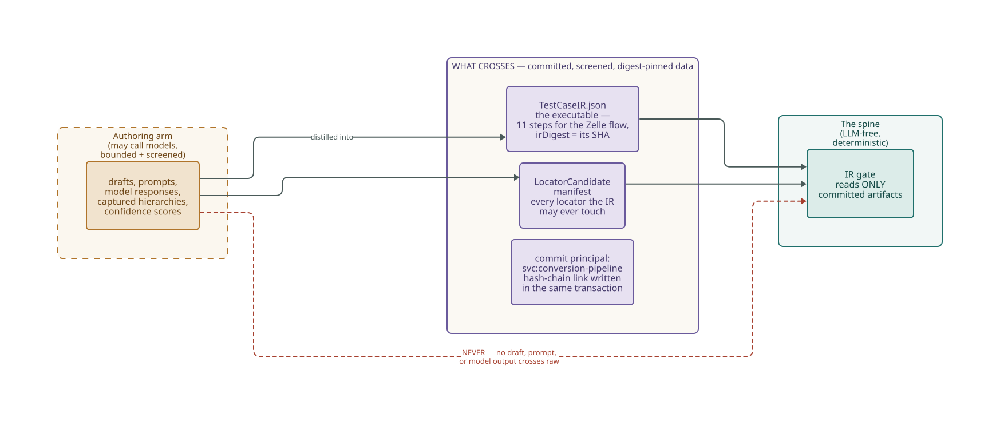
The commit that used to be a person
In o1, an engineer reviews every generated test before it is committed. In o7 that pre-commit review is removed — the IR and manifest are auto-committed by a service principal, svc:conversion-pipeline, with the hash-chain link written in the same transaction. If that sounds reckless, follow the decision record's reasoning, because it is a masterclass in decomposing a control into its actual jobs:
- Security? Already retired as a rationale — ADR 0013 explicitly rejected per-artifact human review as a security control and removed credentials from the execution path instead. An unreviewed-but-gated IR has nothing to steal.
- Correctness? Transferred to machines: the seven-check IR gate, whose seventh check is a no-device dry-run (next section) — deterministic, repeatable, and stricter than a tired reviewer at 4 p.m.
- Attribution? Relocated, not deleted: the individual principal moves from the commit row to the certification verdict row, where the accountable human actually decides (section 12).
The residue of the old review decomposes cleanly, so the review goes — and the recurring human cost of the pipeline halves. When you propose removing a control, this is the bar: name each job the control was doing, and show where each job now lives.
08The IR gate — architecture with teeth
Before ACC-2087 may touch a device, its IR faces seven deterministic checks. Zero device cost, zero compilation — there is no generated Java in o7, so the old compile-and-lint gate has no analogue; validating the artifact replaced compiling the code.
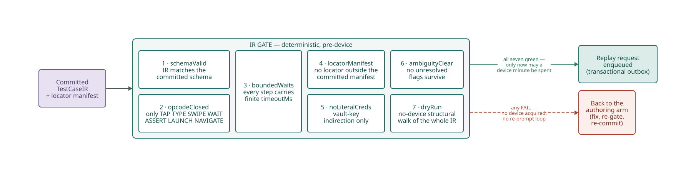
Read the seven as an architecture lesson, not a checklist:
opcodeClosed— only the seven opcodes (TAP TYPE SWIPE WAIT ASSERT LAUNCH NAVIGATE) and three assertion kinds exist. The vocabulary is closed: adding an opcode is a spec change, never a silent runtime capability. This kills DSL sprawl at the root.boundedWaits— every step carries a finitetimeoutMs. This is not a style rule; it is a determinism control. An unbounded wait makes a run's outcome a function of wall-clock luck instead of the committed artifact. (It also quietly replaced an entire lint category from o1 — with no test code to lint, the rule moved from source-lint to schema enforcement. Controls relocate; they don't evaporate.)locatorManifest— every locator the IR references must appear in the committed manifest. No orphans. The interpreter will never resolve a locator that wasn't reviewed.noLiteralCreds— vault-key indirection only, enforced by schema, not by reviewer vigilance.ambiguityClear— the flag A1 raised in section 06 must be resolved before commit. The interpreter never disambiguates at runtime.schemaValid+dryRun— the IR validates against the committed schema, and a no-device structural walk proves every step resolvable against the captured hierarchy. The dry-run is the correctness substrate that made removing the pre-commit reviewer defensible.
The gate is the architecture's rules made executable. Every discipline in this post that matters is enforced by a machine somewhere — the ones that aren't are the ones that erode.
That sentence is the deep pattern of this whole codebase. Count the enforcement points you have met already: F1 and F2 guard the model and source seams; the schema check guards the IR contract; and in section 13 you'll meet the module-boundary rules, the one-deployable check, the no-per-test-Java rule, and the one-live-driver assertion. o7's structure is not a diagram on a wiki — it is a set of failing builds waiting for anyone who violates it. When you add a structural rule of your own, wire it into CI the same day, or history says it will not survive the quarter.
09The interpreter — the executable is data
The gate passes, a replay request is enqueued through the transactional outbox, and the device-gate worker picks it up. What runs next is the heart of o7: a version-pinned, LLM-free, non-adaptive loop that walks the committed IR step by step over a real Perfecto device. The whole engine fits in your head:
for step in ir.steps: // deterministic, ordered
element = null
for locator in step.target.resolvedLocators: // committed cascade order
element = session.findElement(locator, within=step.timeoutMs)
if element != null: break
if element == null:
report.fail(step, classify(session), evidence(...))
return report // healPolicy NONE → hard stop
switch step.action: // closed dispatch: 7 opcodes
TAP: element.click()
TYPE: element.sendKeys(resolve(step.inputData))
ASSERT: checkAssertion(element, step.assertion)
...
if step.syncAfter == "WAIT_FOR_IDLE":
session.waitForIdle(bounded=step.timeoutMs)
report.recordStep(step, ...) // per-step evidenceA loop and a dispatch table. No branching on model output, no retry cleverness, no guessing. The simplicity is the security argument, the audit argument, and the determinism argument all at once — this small amount of fixed code replaced an entire per-test code-generation stage, and with it the "execute untrusted generated code" attack surface that o1 has to actively contain. Complexity budget spent on not existing.
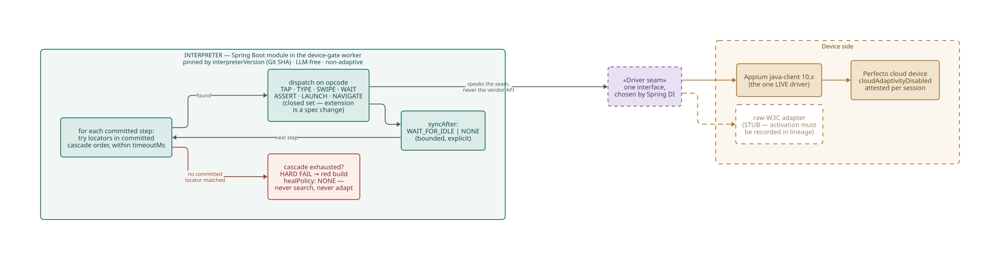
The no-self-heal line
Watch step 7 of our Zelle flow at runtime. The interpreter tries recipient_AlexRivera by accessibility id — found, tapped, done; the committed XPath fallback is never touched. Now suppose release 8.5.0 renames zelleSendButton. At step 9 the interpreter tries every committed candidate, exhausts the cascade, and hard-fails the run: red build, classification LOCATOR_NOT_FOUND, pre/post screenshots attached. It does not search the page source for something button-shaped. It does not ask a model for a better locator. It fails — and repair happens back in the authoring arm: re-capture the screen, re-resolve the cascade, produce a new IR version, re-gate, re-commit.
Understand why this restraint is load-bearing, because every test-tooling vendor will try to sell you the opposite. A certified conversion must pass k independent runs for its verdict to mean anything. Runtime adaptivity — self-healing locators, AI-assisted recovery, "smart waits" — makes each run's outcome partly a function of luck, and luck compounds: adaptive runs fail the all-k-must-agree regime by simple arithmetic. Worse, a green produced by a runtime repair certifies nothing about the committed artifact — it certifies the repair. So: healPolicy: NONE, forever, and the per-session attestation cloudAdaptivityDisabled proves Perfecto's own cloud AI was off. Trying committed locators in committed order is not self-heal; it is the reviewed plan, executed. Exhausting it is a real answer.
Don't marry the vendor — and check the substitute's references
The interpreter never names the Appium client directly; it speaks to a Driver seam it owns, and Spring DI binds the one live implementation — java-client 10.x — behind it. A raw-W3C adapter sits behind the same seam as an unimplemented stub, held for the day a client limitation forces it. That makes the seam a deliberate partial boundary: one interface, one live implementation, dependency direction correct, and no reciprocal structure — bought at a fraction of a full boundary's cost. Partial boundaries decay when nothing guards them, so this one is guarded twice: a seam-contract test that any implementation must pass before it may live behind the seam — substitutability as an executable requirement, not a hope — and a CI assertion that exactly one live driver exists, so a second backend cannot appear without tripping the recorded reopening trigger (section 13).
The vendor client has its own implicit-wait machinery, its own retry helpers, its own conveniences. Using them feels harmless and deletes o7's determinism story a convenience at a time: session setup explicitly sets implicit-wait to zero, and every wait in the system is an explicit, bounded, committed timeoutMs. The seam exists precisely so vendor conveniences must pass through a contract that refuses the ones that break policy. If you find yourself importing an Appium type outside the driver adapter, you are on the wrong side of the wall.
10Humble at the device edge
Real devices are the most expensive, slowest, least deterministic resource this system touches. The classic failure mode of device-test pipelines is that everything ends up testable only on a device — every change queued behind hardware availability, every bug bisected at device speed. o7's defense is a disciplined split you should learn as a lifelong pattern: at every hard-to-test edge, divide the code into a testable side that holds all the decisions and a humble side that holds none.
Everything that decides lives device-free: opcode dispatch, cascade ordering, timeout bookkeeping, assertion checking, the classification rules, all seven gate checks, the dry-run walk. The humble remainder — the driver adapter translating seam calls into vendor calls, the session against a real iPhone — is kept so thin there is nothing in it to get wrong beyond the translation itself.
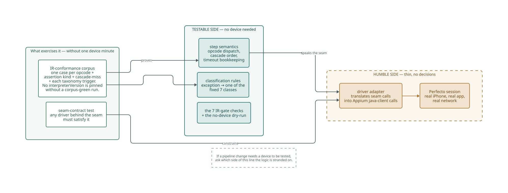
The corpus is the contract
The testable side isn't just unit-tested ad hoc — it is governed by a committed IR-conformance corpus: one case per opcode, per assertion kind, plus the cascade-miss-hard-fail case and one trigger per classification class. No interpreterVersion may be pinned into the pipeline without a corpus-green run. That turns the version pin from a label into a behavioral claim — a version bump that silently changes what TAP means is caught before the pin is trusted. It is also the recorded defense against the fate of abandoned test-runner projects the design record names: an interpreter you own is only safe to own if a machine can prove each release still means the same thing.
Notice what the corpus is keyed to: the IR contract, not the interpreter's class structure. There is deliberately no test-class-per-production-class mirror here. Tests coupled to internal structure freeze it — every refactor breaks a hundred tests that verify nothing a user cares about, and the suite starts resisting change instead of enabling it. Tests coupled to the contract free the internals to evolve. When you add interpreter behavior, extend the corpus, not a mirror suite.
One more edge rule, easy to miss: everything the interpreter pulls back from the device — Smart Reporting artifacts, screenshots — is hashed at landing before any downstream read, and passes through the same screening library as ingested source text. Device output is untrusted input. The trust boundary at the bottom of the system is as real as the one at the top.
Engineer "So if I change how SWIPE maps to W3C actions, what actually has to pass before it ships?"
Mentor "The corpus case for SWIPE, no device needed. Then the seam-contract test if you touched the adapter. A Perfecto run happens once, at the week-gate — not four hundred times while you iterate. That's the whole point of the split: the expensive thing verifies, the cheap things develop."
11The database is a detail — the data model is not
Our Zelle run passed: eleven green steps, a ReplayReport, screenshots, session versions. Now comes the half of the system that exists for a reader who isn't on the team: the auditor, three years from now. This section turns on two ideas that are easy to confuse and must be kept apart. The data model — what is recorded, how it relates, what can never be changed — is architecturally sacred in o7. The database — the engine that stores it — is a detail behind ports. Getting this backwards is how systems end up worshipping their storage engine.
The data model first, because it earns its centrality. Lineage is append-only: every row chains to its predecessor's digest within a per-conversion hash chain, every row carries an authenticated principal, corrections are compensating appends — never updates — and the application's database role physically cannot UPDATE or DELETE lineage. And because a hash chain alone only proves consistency to whoever controls the database — the wrong audience — chain heads are anchored into immutable object storage, so a database-side rewrite cannot also rewrite the evidence of the rewrite. The design record is candid about the limit: this detects tampering; it does not prevent it. Honest controls state what they don't do.
One primary store holds two schemas with different lifecycles — volatile conversion state and permanent lineage — with independent retention, independent grants, and no foreign keys from lineage into conversion state: the permanent record may never depend on rows that expire. Bulky device artifacts go to object storage through the S3 port, with the store holding references and digests, never payloads. Partitioned by lifecycle, note — by how the data lives and dies, not by which table is biggest.
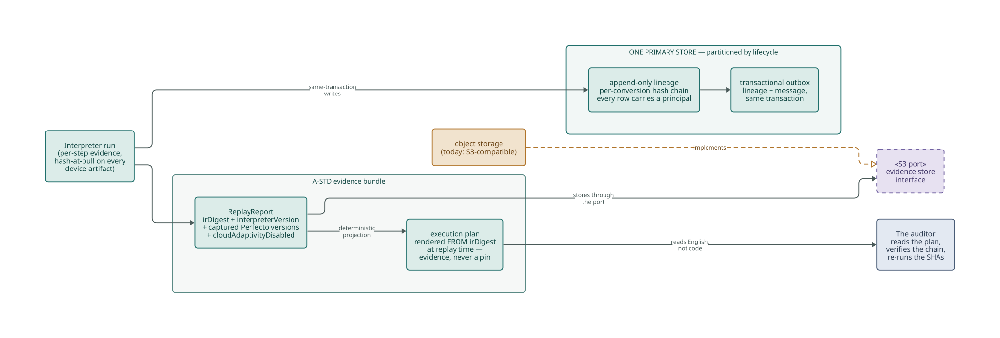
Now the "detail" half — and what deferral buys
Which object store does production use? The team doesn't know yet — on purpose. All evidence I/O goes through a thin S3-compatible port; dev and CI have run containerized MinIO behind it since task zero; and the production binding awaits a probe of whether the bank already operates an internal S3-compatible service. Work has never stopped for that answer, because the port made the decision deferrable. That is the payoff of treating storage as a detail: the pipeline was buildable and testable for weeks while a procurement-grade decision stayed open. When someone asks you why we bother with ports, this is the story to tell — the boundary let us not decide, cheaply.
The same-transaction rule deserves respect too: every lineage write happens in the same local transaction as the state change it describes, and at the two async seams a transactional outbox records the enqueue in that same transaction. No distributed transactions anywhere — one process, one commit point. This is a place where the monolith decision (section 13) pays rent: "trivial in one process, the hard case in any distributed option," as the style decision put it.
The execution plan is a presenter
Inside the evidence bundle sits a file called acc-2087.plan.md — the whole run in numbered English lines: "9. TAP 'Send' → zelleSendButton (→ WAIT_FOR_IDLE)." Understand its architecture, because it is a textbook move. The plan is rendered deterministically from the irDigest at replay time — a pure projection for human eyes, holding only pre-formatted lines a compliance officer can read without seeing code. It is never committed as an authoritative artifact and nothing gates on it, because a committed plan would be a second source of truth that could drift from the IR — the two-competing-pins problem. It cannot drift, because it is derived; and it cannot be leaned on, because it is evidence, not a pin. When you build any human-facing view in this system, copy this shape: derive, present, and never let the presentation become load-bearing.
Auditor "Show me exactly what produced this certified Zelle verdict, and prove it hasn't changed."
Mentor "The committed IR at irDigest sha:ir:2087:d41c9a… — a content digest of the canonical IR itself — executed by the interpreter at interpreterVersion sha:interp:9f0c22…, a git commit SHA. Fetch both and re-run. The plan you're holding is byte-derived from the first SHA. The chain from ingestion to verdict is hash-linked, and its heads are anchored in storage we cannot overwrite. The session attested Perfecto's AI was off, and the driver versions we can't pin are captured right there as evidence."
Auditor "Who vouched for it?"
Mentor "The commit, a service principal after seven machine checks. The verdict, a named human. Next section."
12Humans and interfaces — the seam that stays human
o7 removed a human touchpoint at the commit. It is worth being precise about what it kept, because the keeping is enforced at the database level. Every lineage row must carry an authenticated principal — an individual for human actions, a per-component service principal for automated ones, and a catch-all system principal is invalid at the schema. And one row demands more: the certification verdict row requires an individual. The machine's PASS is a precondition; certification is an attributable human decision, post-run. A fully autonomous certification path — no human on the verdict — is not "deferred": it is barred, recorded as a hard boundary in the spec.
The human doesn't decide unaided, either. Certification obtains one advisory fidelity grade — through the same invoke_models seam as every other model call in the system (ADR 0004) — recorded as evidence with the judge's calibration version pinned, cached so a retry never re-grades, and still valid if the gateway is down. Note the shape of that arrangement, because it is the certified path's whole stance on models in one sentence: the grade advises; the person certifies. An advisory judge is never an autonomous one. (The design record calls this human the section-7 evaluator, after the spec section that defines the role — you'll hear the name in standups.)
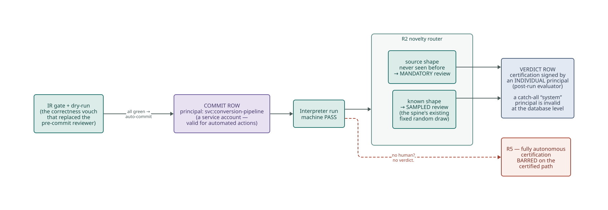
Spending human attention where it buys the most
The remaining human touch is routed, not blanket. The novelty sampler stamps each IR at commit: a source shape the pipeline has seen before — our Zelle flow is ordinary login-navigate-submit-assert — goes to sampled review under the spine's existing fixed random draw; a genuinely novel shape routes to mandatory review. No new review machinery was invented for o7: the sampler reuses the spine's existing calibration flag, and the draw size is a plan-level value. Human attention is the scarcest resource in the pipeline; the design spends it on novelty and audit, not on rubber-stamping the four-hundredth login flow.
Interfaces sized to their consumers — and the service that isn't there
Who looks at all this? Four consumers, four deliberately different surfaces, recorded in ADR 0008: reviewers get the web review queue (the only Phase-1 UI, every approval attributed); engineers get two CLIs speaking directly to the runtime; auditors get a versioned, read-only export owned by the provenance component; and the delivery lead gets a read-only metrics dashboard over the provenance read model. Notice what each consumer does not get: the reviewer surface carries no export machinery, the auditor export carries no mutation paths, and neither hauls the other's baggage. Interfaces are segregated by who consumes them, so no consumer depends on operations it never calls.
And notice what was not built: no backend-for-frontend layer, no "review service." The decision record's structural CI assertion makes adding a second web client or a BFF require a superseding ADR. This is a discipline worth internalizing early in your career: a service boundary is not automatically an architecture. The architecturally significant lines here — commit, gate, verdict — run through the monolith, drawn in code and enforced in CI. Standing up a network service where a boundary suffices buys you latency, serialization, and a deployment topology, and buys the architecture nothing. o7 keeps its boundaries strong and its process count at one.
One more governance seam worth knowing exists: for this target, security review runs as a parallel track — an ADR crossing a security threshold can be Accepted at the architecture gate with the security review queued and tracked, its output landing as a revision or superseding record, never a retroactive hold. The record is equally honest that the security-owner role is currently dual-hatted onto the architecture owner, and names the conditions that reopen blocking authority — a separate security owner being designated, production-derived data entering the system, or a parallel review surfacing a finding that would have blocked an ADR already built upon. You will inherit decisions shaped by this arrangement; now you know where its edges are written down.
13Three modules, named exits
Zoom out to the component level. o7 ships as one deployable: a Spring Boot modular monolith, three modules — conversion, validation-certification, evidence — importable only through their published interface packages, forming a dependency graph with no cycles: conversion feeds validation-certification feeds evidence, arrows one way. The interpreter lives inside validation-certification as a module hosted by the device-gate worker; the plan renderer lives in evidence. That placement isn't taste — it follows the partitioning rule the modules were cut by.
The cut is worth learning as a rule you can reuse: group what changes together; separate what changes apart. The blueprint's original stage-shaped modules failed exactly that test — a change to certification policy would have smeared across three stage modules, while unrelated stages shared one. The characteristic clusters change as units: authoring concerns together, certification concerns together, record-keeping concerns together. When a future extraction ever happens, it cuts along seams that already exist in both the code and the schemas.
And the components stay honest about the other side of the tension: a component is also a unit someone consumes. The published-interface rule means depending on evidence pulls in its contract, not its internals — no consumer inherits baggage it never asked for. Cohesion pulls classes together; the don't-force-dependencies rule pushes oversized components apart; where the balance lands shifts with a project's maturity. o7, young and single-team, leans hard toward develop-ability — big cohesive modules, one release — with the release-granularity question deliberately parked (and one honest gap in that parking noted in section 14).
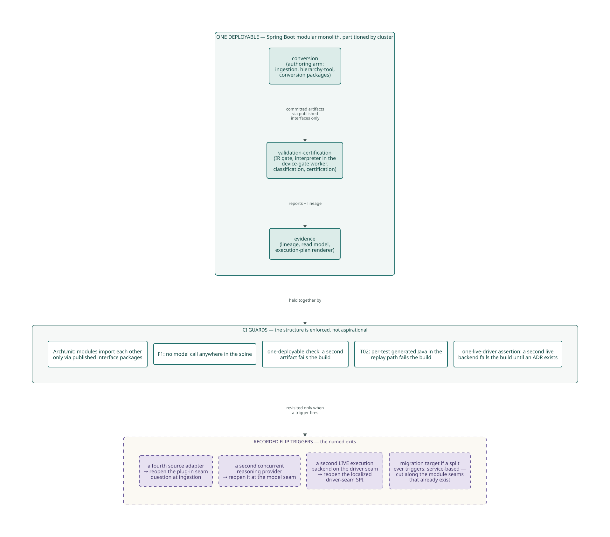
Why a monolith — argued, not defaulted
Read ADR 0005 and 0017 together and you'll see the monolith won on the merits of this system's driving characteristics, all three of which reward one process: reproducibility (one clock, one transaction boundary), auditability (one trust boundary; in-transaction lineage), and pinning-integrity ("what ran" stays a two-value answer). Distribution was scored, and its costs — verdict pinning across a network, correlation instead of transactions — were named, weighted, and declined. Service-based is recorded as the migration target, with the first extraction candidates and their triggers spelled out. A monolith chosen this way is nothing like a monolith by inertia: it can tell you exactly what would change its mind.
The same record honesty applies to the road not taken twice. A core-plus-plugin architecture was proposed for o7 — it pattern-matches nicely to a driver seam and a closed opcode set — and declined with the reasoning written down: a runtime plug-in registry is a late-binding surface exactly where o7 spent its budget closing runtime variation; it would insert a third version variable that irDigest + interpreterVersion don't capture; and it would explode the conformance corpus from "one version behaves" to "every plug-in combination behaves." The registry's one genuine benefit — structural evolvability at the seam — is already banked by the plain Spring-DI seam at zero cost. Superficial pattern-matches lose to weighted characteristics; that's the discipline to copy.
Decoupling is a dial, and someone recorded where it's set
Between "one source tree" and "network services" lie distinct decoupling modes, and a system should be able to move along that dial as facts change. o7 sits deliberately at strict module boundaries inside one deployable — pushed far enough that a service could be formed along the module seams, kept co-located because nothing yet justifies the distribution tax. What makes this a living dial rather than a frozen choice is that the reopening conditions are recorded — and the sharpest of them mechanically guarded:
- A fourth source adapter or a second concurrent reasoning provider reopens the plug-in question at those seams (ADR 0005's original trigger — held by the record and its quarterly boundary review, not by a CI rule).
- A second live execution backend on the driver seam reopens the localized driver-seam SPI (ADR 0017's sharper trigger) — and a CI assertion fails the build if a second live driver appears before that conversation happens, so the trigger cannot be crossed silently.
- An evidence-residency ruling would reopen extraction for the evidence cluster specifically.
The monolith isn't a belief. It is a decision with tripwires — the sharpest wired into CI, the rest written down where the quarterly review must trip over them.
Where the wiring lives
Last piece of the shape: somebody has to construct all of this. One place does — the composition root. Spring builds the object graph there: which adapter satisfies the ingestion contract, which implementation sits behind invoke_models, which driver binds behind the seam. That is also where the "dirty" knowledge is swept — the unavoidable knowledge of concrete classes that the rest of the system refuses to hold. Policy code asks for interfaces; the root knows the concretions; @Autowired never wanders into a policy package. If you need to know "which implementation actually runs in prod?", there is exactly one place to look, and that is the point of having exactly one place.
Watching the shape with numbers
Structure rules catch violations; numbers catch drift. Two families are worth knowing before your first review. At the method level, cyclomatic complexity counts the independent paths through a piece of code — every branch multiplies what a test must cover. Keep it in single digits and treat a spike as a question: is the complexity essential to the problem, or accidental to the solution? The distinction has sharp new relevance: brute-force, low-abstraction code — the fifty-case switch where a table would do — is the signature failure of model-generated implementation, and complexity numbers are among the best detectors of it. A pipeline whose entire thesis is bounding what models decide should hold model-drafted code to the strictest thresholds in the shop.
At the component level, two balances matter: how many things depend on a module versus how many it depends on (incoming dependencies make it hard to change; outgoing ones make it want to change), and how abstract it is versus how stable it must be. A module that is heavily depended-on, concrete, and volatile is a pain generator — database schemas are the canonical residents of that zone, which is one reason section 11 guards the lineage schema so fiercely. And the rule that makes any of this real: a metric only becomes a control when it is wired to an alarm. o7's ArchUnit rules are exactly that pattern for dependencies; the same treatment for these numbers is one of the proposals in the next section — the numbers exist today, the alarm doesn't.
14What we deliberately don't have — and what this post proposes
An honest architecture post about a real system owes you this section. The catalog of disciplines this series teaches recommends several structures o7 has not built. Some are already named in the design record as deferred follow-ons — decided-later, not forgotten. Others are proposals this post makes to the team: they fit the design's own logic, but no decision record exists for them, and in this codebase an undecided structure is exactly that. Do not build anything below without the conversation.
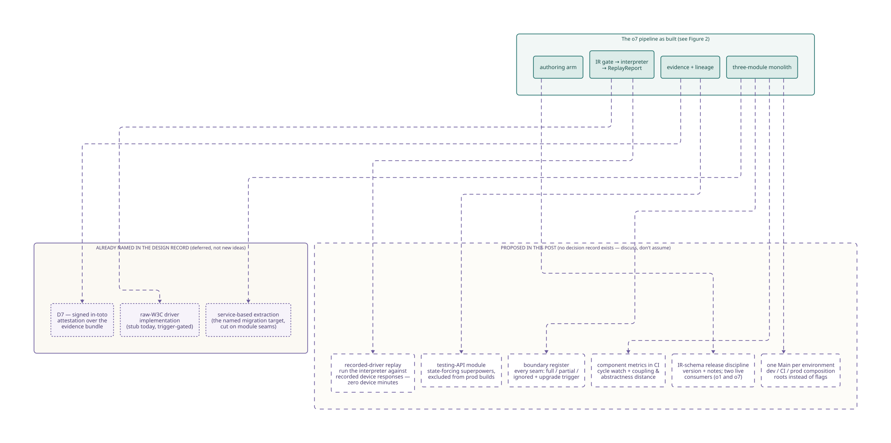
| Item | What it buys | When it becomes worth it | Status |
|---|---|---|---|
| D7 — signed in-toto attestation wrapping the evidence bundle | Cryptographic tamper-evidence on top of the hash chain, near-zero schema invention | Named follow-on; explicitly not built now (spec S6) | named follow-on |
| raw-W3C driver implemented behind the seam | Escape hatch from a java-client limitation | Only when a concrete limitation forces it; activation recorded in lineage (C1) | named follow-on |
| Service-based extraction along module seams | Independent scaling/deployment if ever needed | Named migration target with recorded triggers (ADR 0005/0017) | named follow-on |
| Recorded-driver replay — a Driver-seam implementation that replays recorded device responses | Full interpreter runs with zero device minutes; richer than the structural dry-run; a dev/CI fixture the seam makes cheap | When device-minute cost or corpus growth makes no-device interpreter runs valuable | PROPOSED |
| Testing-API module — state-forcing superpowers (seed lineage chains, force quarantine states), independently built, excluded from production artifacts | Tests decoupled from application structure; review-queue and quarantine paths testable without contortions | When quarantine/review-path test setup starts dominating test-writing time | PROPOSED |
| Boundary register — one committed file listing every seam: full / partial / ignored, with its upgrade trigger | Generalizes what ADR 0005/0017 already do for two seams to all of them; partial boundaries stop decaying invisibly | Cheap now; value compounds as seams multiply | PROPOSED |
| Component metrics in CI — cycle watch plus coupling/abstractness distance per module, alarmed not just measured | Structural drift caught as a trend, not at the quarterly review; complements the existing ArchUnit rules | Once module count or contributor count grows past what review catches | PROPOSED |
| IR-schema release discipline — version numbers + release notes for the IR schema as an internal component | Two live consumers (o1 and o7) can adopt schema changes on their own schedule instead of lockstep | Now-ish: the two-pipeline reality already exists | PROPOSED |
| One Main per environment — dev / CI / prod composition roots as separate small Mains instead of one Main plus flags | Each environment's wiring readable at a glance; pairs naturally with the recorded-driver fixture for a no-device dev Main | When config-flag combinatorics in the single root start hiding what runs where | PROPOSED |
To be unmistakable: the six PROPOSED rows are this post's suggestions, offered because they follow the design's own logic — seams make fixtures cheap, partial boundaries need guards, records beat memory. None has been through a gate. If one earns your enthusiasm, the path is the same as for any structural change here: write the decision record, argue the trade-offs against the driving characteristics, and let the gate decide. The worst thing you could do with this table is treat it as a backlog.
15Monday morning checklist
Everything above, compressed into what you actually do in your first weeks. Most of these are grep-able; none require permission.
- Before you write code
- Read the o7 spec top to bottom once, then ADR 0016 and 0017. Know the statuses: what's Accepted, what's Proposed, what gate is pending.
- Walk Figure 2 from memory: source → canonical intake → IR → commit → gate → interpreter → report → human verdict. If you can't, re-read Part Two.
- Learn the two-value answer by heart:
irDigest+interpreterVersion. Every design conversation here eventually lands on protecting it. - In every PR you open
- Check each new import's direction against the altitude map: policy packages never import adapter packages, and nothing imports a vendor SDK outside its adapter.
- No model call outside
invoke_models; no Appium type outside the driver adapter; no source-system type outside its ingestion adapter. CI will catch you — beat it there. - Data crossing a boundary is a plain committed structure in the consumer's shape. If you're passing a vendor object inward, stop at the adapter and translate.
- Every wait bounded, every ambiguity resolved pre-commit, no literal credentials — the IR gate's rules are your authoring rules.
- Touched interpreter behavior? Extend the conformance corpus in the same PR. Touched the driver adapter? The seam-contract test decides, not you.
- In every review you give
- Ask the actor question: who demands changes to this file, and is it one answer?
- Ask the substitutability question: could a second implementation live behind this interface without callers knowing? If a caller sniffs types, the boundary is already broken.
- Ask the humble question: is new logic stranded on a hard-to-test side of an edge? Move the decision, keep the edge thin.
- When you're tempted
- To add a "smart" retry, a locator fallback search, or an unbounded wait: no. Determinism is the product. A miss is a red build, and the fix is a new committed IR version.
- To add an opcode: that's a spec change with a gate, never a quiet capability.
- To split out a service or add a plug-in registry: find the recorded trigger. Untripped? Write the ADR that argues the world changed, or let it go.
- To skip writing a decision record for a structural change: remember that every honest thing this post could tell you exists because someone wrote one.
You now know the pipeline end to end — and better: you know why each wall is where it is, and exactly which recorded conditions would move it.
All Zelle artifacts (IR excerpts, gate report, plan lines, SHAs) are mocked illustrations consistent with the committed mock set; statuses are as of 2026-08-08. Where this post and the design record ever disagree, the record wins — and tell the team, because one of the two needs fixing.